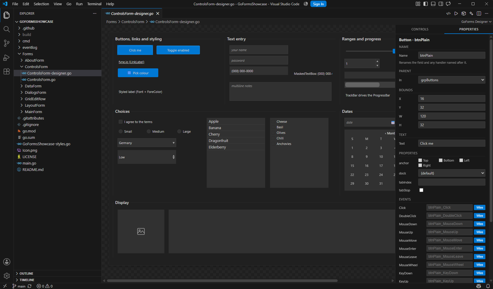

GoForms
A GUI framework for Go that follows System.Windows.Forms:
controls placed at X, Y, Width, Height, docking and
anchoring, multicast events with the (sender, e)
signature, and forms split into a generated half and a hand-written half.
Rendering, windowing and input come from Fyne, so it draws with the GPU on Windows, Linux and macOS, and also builds for WebAssembly and Android. Everything above that line — the control catalogue, the layout rules, the event model — is the WinForms API, named after the types it stands in for.
The designer is a VS Code extension. It reads and writes the same Go file you
would write by hand: no .resx, no generated resource
blob, nothing that only a tool can open.

A form is two files
The split is the one WinForms makes between Form1.Designer.cs
and Form1.cs. The designer writes the first file only;
the second is yours and is never rewritten.
type MainForm struct { *goforms.Form btnGreet *goforms.Button lblHello *goforms.Label } func (mf *MainForm) initializeComponent() { mf.lblHello = goforms.NewLabel("Hello, World!") mf.lblHello.SetBounds(20, 20, 200, 24) mf.AddControl(mf.lblHello) mf.btnGreet = goforms.NewButton("Greet") mf.btnGreet.SetBounds(20, 60, 100, 30) mf.btnGreet.Click.Handle(mf.btnGreet_Click) mf.AddControl(mf.btnGreet) }
package mainform import goforms "github.com/Go-Forms/GoForms" // Written by the designer when Click was wired, // and left alone from then on. func (mf *MainForm) btnGreet_Click( sender any, e goforms.MouseEventArgs, ) { mf.lblHello.SetText("Clicked!") }
What carries over from WinForms
- Absolute positioning.
SetBounds(x, y, w, h)puts a control where you asked, measured against the size the form was designed at. - Docking and anchoring. The same five dock styles and four anchor flags, applied in the same order: docked children carve up the client area, and what is left is the frame anchors are measured against.
- Multicast events.
Event[T]works like a C# event.Handle(h)is+=, handlers run in the order they were added, and every signature is(sender any, e T). - Dialogs.
ShowDialogreturns aDialogResult; message boxes, file pickers, folder and colour pickers report through callbacks, because the toolkit draws them on the UI goroutine and blocking it would deadlock. - Containers. Panel, GroupBox, TabControl, SplitContainer, FlowLayoutPanel, TableLayoutPanel — each laying its children out the way its WinForms counterpart does.
- Themes. One
Themeliteral decides how the application looks; a field left unset keeps the toolkit's default rather than becoming a blank.
Golden-file tests pin the arranged geometry of docked and gridded layouts, so a change that moves a control by a pixel fails the build rather than shipping.
The designer
Opening a *-designer.go file in VS Code opens the canvas.
Dragging a control writes its constructor call, its setters and its struct field;
moving it rewrites the bounds; renaming it renames the field and every reference to
it. Wiring an event generates a typed handler stub in the hand-written file, adds
the import if it is missing, and rewrites the existing wiring instead of stacking a
second one.
Every edit ends with a cleanup pass that removes what the edit made redundant — setters a later call overrides, repeated adds, duplicate field declarations — and the file is written back gofmt-formatted, so a designer edit and a hand edit produce the same file. Docked controls are drawn where they will really appear rather than at their stored coordinates.
It also scaffolds projects (empty, example, browser or Android), opens a project's theme as a visual editor, and builds and runs the project for the desktop, the browser or a connected phone.

Control catalogue
Every type below is in the designer's toolbox and understood by the code generator.
Common controls
Containers
Menus and toolbars
Data


DataGridView with sortable, resizable columns, next to a TreeView.Install
Go 1.23 or newer, plus the C toolchain and OpenGL headers Fyne needs on your
platform. On Debian or Ubuntu:
gcc pkg-config libgl1-mesa-dev xorg-dev libxkbcommon-dev libwayland-dev.
Windows, Linux and macOS are all supported and all tested on every commit.
go get github.com/Go-Forms/GoForms # Or run the showcase, which is every control # and layout in one application: git clone git@github.com:Go-Forms/GoFormsShowcase.git cd GoFormsShowcase && go run .
# From the latest release: code --install-extension goforms-designer-0.10.0.vsix # Then, in VS Code: # Ctrl+Shift+P -> "GoForms: Create New Project..." # Open any *-designer.go file to get the canvas.
Repositories
- GoForms — the framework: controls, layout, events, dialogs, theming.
- GoFormsDesigner — the VS Code extension and the Go tool that parses and rewrites designer files.
- GoFormsShowcase — one form per subject, with a live event log, so anything on this page can be checked by running it.
- GoFormsDemo — a smaller sample, closer to a real project's first few forms.